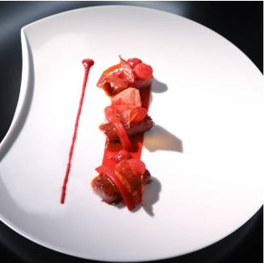

Prend un tablier et regarde la vidéo suivante !
Comme te l’a bien expliqué le chef Roger (si tu arrives à comprendre son accent!), tu as pour mission de réaliser la recette et un dessin du dressage d'un plat monochrome. En voici un exemple :
Avec 3 ingrédients différents minimum (sans compter les condiments) que tu trouves chez toi, crée et cuisine une entrée, un plat ou un dessert d’une seule et même couleur à la fin dans l’assiette.Toutes les couleurs sont acceptées.. Il faut que ça soit mangeable et même excellent évidemment ! Sois créatif !
Après avoir écrit ta recette, fais le dessin de ton plat et trouve un nom à ta recette !